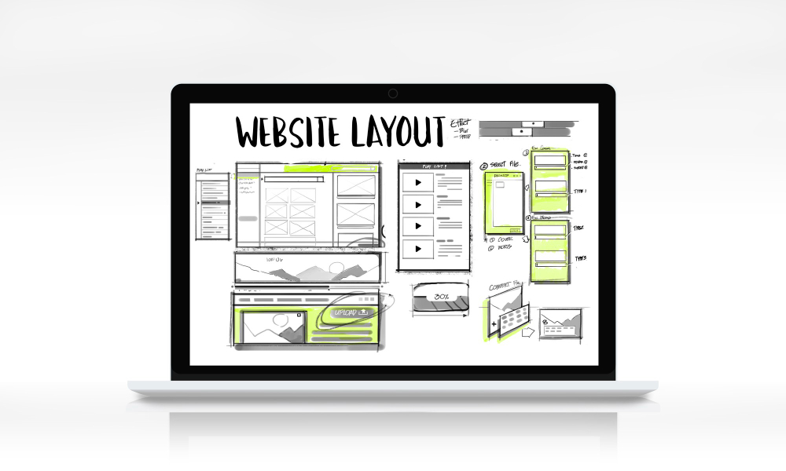

Adobe Premiere Pro
Timeline-based editing and finishing workflows.
CREATIVE SERVICES / 01
From short-form social content to longer edits, I work with pacing, transitions, colour and sound to shape a clear viewing experience.
OVERVIEW
My editing journey began with mobile tools such as Kinemaster and has expanded to desktop workflows using Adobe Premiere Pro, DaVinci Resolve and CapCut. I continue to explore editing techniques and AI-assisted tools as part of the creative process.
My workflow includes reviewing footage, building a rough cut, refining timing and audio, colour treatment and exporting for the intended platform.

Timeline-based editing and finishing workflows.
Editing, colour grading and audio post-production.
Short-form social content and mobile-first edits.
Multi-layer mobile editing, transitions and effects.
Reviewing and organising clips by scene and content.
Establishing story structure, selects and pacing.
Refining transitions, syncing music and balancing layers.
Applying correction and creative colour treatment.
Preparing the final file for its intended platform.



HAVE A PROJECT IN MIND?